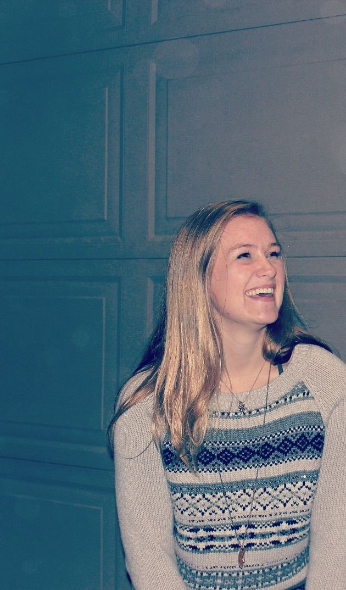

About Me
I'm Meredith - a Portland-based web professional with a background in Computer Science, UX/UI design, and iOS development. I've spent my career at the intersection of design and technology, helping organizations untangle their digital presence and build something enjoy using.
When I'm not redesigning webpages or coordinating with stakeholders, you'll probably find me in or near the water - I've spent 10+ years in aquatic leadership, and teaching swim lessons, which has taught me more about communication and calm under pressure than any classroom.
I'm currently open to web content, UX, and Coordination roles - remote, hybrid, in-person, or relocation welcome.

Education
BS in Computer Science
University of Portland · 2021
Minor in Communications
Certificate in UX/UI Design
UC Berkeley Extension · 2023
Skills & Tools
Design
Figma · Wireframing · Prototyping · User Testing · Accessibility
Development
HTML · CSS · JavaScript · React · Swift · Python
Tools & Platforms
Squarespace · GitHub · Slack · Microsoft Office · Zoom
Beyond Work
Aquatic Leadership
10+ years teaching and leading aquatics programs - where I learned to stay calm, communicate clearly, and keep things running smoothly.
Society of Women Engineers
Member since 2017.